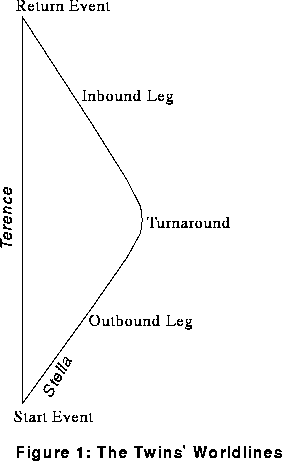
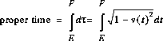
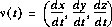
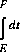

[Top]
[Intro]
[Prev]
[Next]
By Michael Weiss.
This entry borrows heavily from the original FAQ entry for the Twin Paradox, by Kurt Sonnenmoser. But it has also been extensively modified, so he is not responsible for any sloppiness or infelicities.
Minkowski said "Henceforth Space by itself, and Time by itself, are doomed to fade away into mere shadows, and only a kind of union of the two will preserve an independent reality." Minkowski recast Einstein's version of Special Relativity (SR) on a new stage, Minkowski spacetime. The Twin Paradox has a very simple resolution in this framework. The crucial concept is the proper time of a moving body.
First chose one specific inertial frame of reference, say the rest frame of Earth (which we'll pretend is inertial). Once we've chosen a reference frame, we can define co-ordinates (t,x,y,z) for every event that takes place. Pop-science treatments sometimes ask us to imagine an army of observers, all equipped with clocks and rulers, and all at rest with respect to the given reference frame. With their clocks and rulers they can determine when and where any event takes place—in other words, its (t,x,y,z) co-ordinates. In a different frame of reference, a different army of observers would determine different co-ordinates for the same event. But we'll stick with one frame throughout this discussion.
The collection of all events in toto, no matter where or when, is called spacetime. Traditionally, one plots events in spacetime on a Minkowski Spacetime Diagram. That's just a piece of paper (or blackboard!) with the t co-ordinate running vertically upwards, and the x co-ordinate running horizontally. (One just politely ignores the y and z co-ordinates, 4-dimensional paper and blackboards being in short supply at most universities.) Be aware that Terence's lines of simultaneity are horizontal lines on this plot. That is, all events lying on any horizontal line are given the same time co-ordinate by Terence. He regards them as simultaneous.

If we plot all of Terence's and Stella's events, we get their so-called "worldlines". (Miscellaneous trivia: the physicist George Gamow titled his autobiography, "My Worldline".) Terence's and Stella's worldlines are shown in figure 1.Since Terence is at rest in our chosen frame of reference, at all times he will be in same place, say (0,0,0). In other words, the co-ordinates of his events all take this form:
(t,0,0,0)
But at an arbitrary time t, Stella's event co-ordinates will take this form:
(t, f(t), g(t), h(t))
where f(t), g(t), and h(t) are all functions of t, and t is (remember) measured by some lowly private in our observer army.
Plotting distance against time is nothing new. Minkowski's new twist was the following formula:
dτ2 = dt2 - dx2 - dy2 - dz2
Here, dt, dx, dy, and dz are all co-ordinate differences between two events that are "near" each other on the Minkowski diagram. (So if (t,x,y,z) are the co-ordinates of one event, then (t+dt,x+dx,y+dy,z+dz) are the co-ordinates of the other.) Time and space are measured in units for which c, the speed of light, equals 1 (e.g. seconds and light seconds). And dτ is the proper time difference, which we define next.
Suppose someone wearing a watch coasts uniformly from event (t,x,y,z) to event (t+dt,x+dx,y+dy,z+dz). The time between these two events, as measured by that person's watch, is called the elapsed proper time for that person. And according to Minkowski, the proper time is given by dτ in the formula above.
More generally, suppose someone carrying a high-quality time-piece travels some worldline from event E to event F. "High-quality" here means that acceleration doesn't affect the time-keeping mechanism. A pendulum clock would not be a good choice! A balance-wheel watch might do OK, a tuning-fork mechanism would be still better, and an atomic clock ought to be nearly perfect. How much time elapses according to the time-piece? I.e., what is proper time along that worldline between events E and F? Well, simply integrate dτ:

where

is the velocity vector, and [v(t)]² is the square of its length:
[v(t)]² = (dx/dt)² + (dy/dt)² + (dz/dt)²
You shouldn't have much difficulty obtaining these formulas from what we've said already.
Our integral for the proper time can be difficult to evaluate in general, but certain special cases are a breeze. Let's take Terence's case first. Remember that his event co-ordinates are always (t,0,0,0), so dx, dy, and dz are always 0 for him. So dτ is just dt, and the forbidding integral becomes:

that is, just the difference in the t co-ordinates! In other words, Terence's elapsed proper time is just the elapsed proper time as measured by our army of observers, in the reference frame in which Terence is at rest. It doesn't stretch credulity too far to suppose that Terence is one of those observers.
Now how about Stella? For her, dx, dy, and dz are not always all 0. So dx/dt, dy/dt, and dz/dt are also not always all 0, and their squares (which appear in the formula for [v(t)]²) are always non-negative, and sometimes positive. So the quantity under the square root is less than or equal to 1, and sometimes strictly less than 1. Conclusion: the value of Stella's integral is less than that of Terence's integral. I.e., her elapsed proper time is less than Terence's. I.e., she ages less.
That's the whole story! We evaluate a path integral along two different paths, and get two different results. Not so different in spirit from picking two points in ordinary Euclidean space, and then evaluating the arc-length integral along two different paths connecting them. It's not just where you're going, it's how you get there. In the words of the unknown poet:
O ye'll tak' the high road
and I'll tak' the low road,
An' I'll be in Scotland afore ye
(But at least our hero and heroine do get to meet again!)